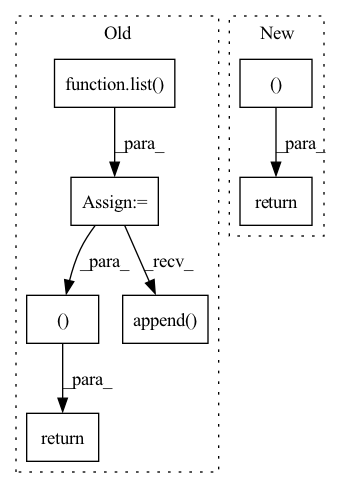

Pattern ID :2233

Before Change
// l1 = l1.mean((2,3))
// l2 = l2.mean((2,3))
regs = list()
for l in allLogits:
posterior = torch.distributions.Categorical(logits=l)
prior = torch.distributions.Categorical(logits=torch.zeros_like(l))
reg = torch.distributions.kl_divergence(posterior, prior).mean()
regs.append(reg)
return ssimLoss, contextLoss, sum(regs)
class CompressionLossQ(nn.Module):
def __init__(self):
After Change
// reg = torch.distributions.kl_divergence(posterior, prior).mean()
// regs.append(reg)
return ssimLoss, contextLoss, 0.0
class CompressionLossQ(nn.Module):
def __init__(self):
In pattern: SUPERPATTERN
Frequency: 3
Non-data size: 7
Instances
Fragment ID: 7832416
Project Name: xiaosu-zhu/mcquic
Commit Name: 3fcc323b5ed6d13cedbbf8ae61c4749b1880c20c
Time: 2021-09-27
Author: xiaosu.zhu@outlook.com
File Name: src/mcqc/losses/quantization.py
M Class Name: CompressionLossBig
N Class Name: CompressionLossBig
M Method Name: forward(4)
N Method Name: forward(4)
M Parent Class: nn.Module
N Parent Class: nn.Module
M File Name: src/mcqc/losses/quantization.py
N File Name: src/mcqc/losses/quantization.py
M Start Line: 140
M End Line: 158
N Start Line: 140
N End Line: 158
'>
Before Change
quantizeds = list()
codes = list()
logits = list()
targets = list()
for xRaw, prob, squeeze, codebook, k in zip(latents, self._prob, self._squeeze, self._codebook, self._k):
targets.append(xRaw)
n, c, h, w = xRaw.shape
// [c, k] -> [k, c]
codewords = codebook.weight.t()
// [n, c, h, w] -> [h, w, n, c]
encoderIn = xRaw.permute(2, 3, 0, 1)
// [h, w, n, c] -> [h*w, n, c]
posisted = self._position(encoderIn).reshape(-1, n, c)
encoderIn = encoderIn.reshape(-1, n, c)
// [h*w, n, c]
x = self._encoder(posisted, codewords[:, None, ...].expand(k, n, c))
// [h*w, n, k] -> [n, h*w, k]
logit = prob(x).permute(1, 0, 2)
sample = F.gumbel_softmax(logit, temperature, hard)
// [N, h*w, c] <- [N, h*w, k] @ [k, C]
// quantized = codebook(sample)
// [n, h*w, k] -> [h*w, n, k]
quantized = sample.permute(1, 0, 2)
quantized /= (k - 0.5) / (2 * k - 2)
quantized -= 0.5 / (k - 1)
// [h*w, n, c]
quantized = squeeze(quantized)
mixed = (mixin * encoderIn / (mixin + 1)) + (quantized / (mixin + 1))
// [h*w, n, c] -> [n, h*w, c] -> [n, h, w, c]
deTransformed = self._decoder(mixed).permute(1, 0, 2).reshape(n, h, w, c)
// [n, c, h, w]
quantizeds.append(deTransformed.permute(0, 3, 1, 2))
codes.append(sample)
logits.append(logit.reshape(n, h, w, k))
return quantizeds, targets, codes, logits
After Change
quantizeds.append(deTransformed)
codes.append(sample)
logits.append(logit.reshape(n, h, w, k))
return quantizeds, codes, logits
'>
Fragment ID: 7832412
Project Name: xiaosu-zhu/mcquic
Commit Name: 88c0e55a6d3e3a8122b70a58818e67d11ba9055b
Time: 2021-01-27
Author: xiaosu.zhu@outlook.com
File Name: src/mcqc/models/quantizer.py
M Class Name: TransformerQuantizer
N Class Name: TransformerQuantizer
M Method Name: forward(5)
N Method Name: forward(5)
M Parent Class: nn.Module
N Parent Class: nn.Module
M File Name: src/mcqc/models/quantizer.py
N File Name: src/mcqc/models/quantizer.py
M Start Line: 239
M End Line: 274
N Start Line: 267
N End Line: 305
'>
Before Change
quantizeds = list()
codes = list()
logits = list()
allCodewords = list()
// probability = mixin / (mixin + 1.0)
// rolloutDistribution = Bernoulli(probs=torch.tensor(probability).to(latents[0].device))
for xRaw, prob, squeeze, codebook, k in zip(latents, self._prob, self._squeeze, self._codebook, self._k):
n, c, h, w = xRaw.shape
// [c, k]
codewords = codebook.weight
// [n, c, h, w] -> [h, w, n, c]
encoderIn = xRaw.permute(2, 3, 0, 1)
// [h, w, n, c] -> [h*w, n, c]
encoderIn = self._position(encoderIn).reshape(-1, n, c)
// [h*w, n, c]
// x = self._encoder(posisted)
x = self._encoder(encoderIn)
// x += torch.randn_like(x)
// x = self._dePosition(x.reshape(h, w, n, c)).reshape(-1, n, c)
// x = encoderIn
// [h*w, n, k]
// logit = prob(x, h, w)
// logit = torch.matmul(x / (x ** 2).sum(-1, keepdim=True), codewords / (codewords ** 2).sum(0, keepdim=True))
logit = x @ codewords
// soft = (logit / temperature).softmax(-1)
// if hard:
// hard = logit.argmax(-1)
// hard = F.one_hot(hard, k)
// sample = (hard - soft).detach() + soft
// else:
// sample = soft
sample = F.gumbel_softmax(logit, temperature, hard)
// sample = logit
// [h*w, N, c] <- [h*w, N, k] @ [k, C]
quantized = codebook(sample)
// quantized += torch.randn_like(quantized)
// quantized = sample
// normalize
// quantized /= (k - 0.5) / (2 * k - 2)
// [h*w, n, c]
// quantized -= 0.5 / (k - 1)
// quantized = squeeze(sample, h, w)
posistedQuantized = self._position(quantized.reshape(h, w, n, c)).reshape(-1, n, c)
// mixed = (mixin * encoderIn / (mixin + 1)) + (quantized / (mixin + 1))
// mask = rolloutDistribution.sample((h*w, n, 1)).bool()
// mixed = mask * encoderIn.detach() + torch.logical_not(mask) * quantized
// [h*w, n, c] -> [n, c, h*w] -> [n, c, h, w]
deTransformed = self._decoder(posistedQuantized, posistedQuantized).reshape(h, w, n, c).permute(2, 3, 0, 1)
// deTransformed = quantized.permute(1, 2, 0).reshape(n, c, h, w)
// deTransformed = self._dePosition(deTransformed.reshape(h, w, n, c)).permute(2, 3, 0, 1)
// [n, c, h, w]
quantizeds.append(deTransformed)
codes.append(sample.argmax(-1).permute(1, 0).reshape(n, h, w))
logits.append(logit.reshape(n, h, w, k))
allCodewords.append(codewords.t())
return quantizeds, codes, logits, allCodewords
class TransformerQuantizerRein(nn.Module):
def __init__(self, k: List[int], cin: int, rate: float = 0.1):
After Change
quantizeds.append(deTransformed)
codes.append(sample.argmax(-1).permute(1, 0).reshape(n, h, w))
logits.append(logit.permute(1, 0, 2).reshape(n, h, w, k))
return quantizeds, codes, logits
class TransformerQuantizerRein(nn.Module):
def __init__(self, k: List[int], cin: int, rate: float = 0.1):
'>
Fragment ID: 7832410
Project Name: xiaosu-zhu/mcquic
Commit Name: 594ba7cd5c9d147e95ba5bd0b842270302dea2a2
Time: 2021-03-02
Author: xiaosu.zhu@outlook.com
File Name: src/mcqc/models/quantizer.py
M Class Name: TransformerQuantizer
N Class Name: TransformerQuantizer
M Method Name: forward(2)
N Method Name: forward(4)
M Parent Class: nn.Module
N Parent Class: nn.Module
M File Name: src/mcqc/models/quantizer.py
N File Name: src/mcqc/models/quantizer.py
M Start Line: 282
M End Line: 342
N Start Line: 295
N End Line: 320